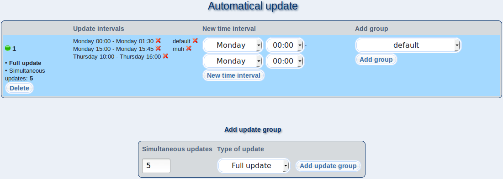

This dialog allows you to specify times when your m23 clients will be automatically updated. You can add several client groups to an update group, whose clients will update regularly on the selected weekdays and at the specified times. The group that is currently active is marked by a green circle.
Subsections
root
2018-05-08